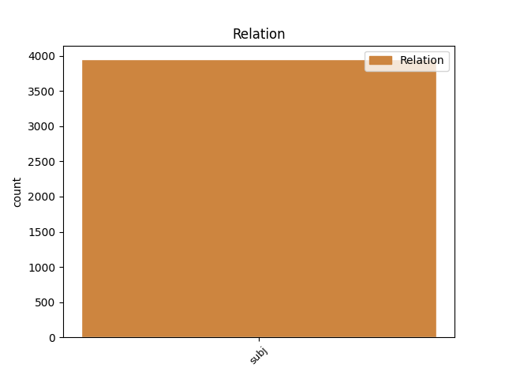
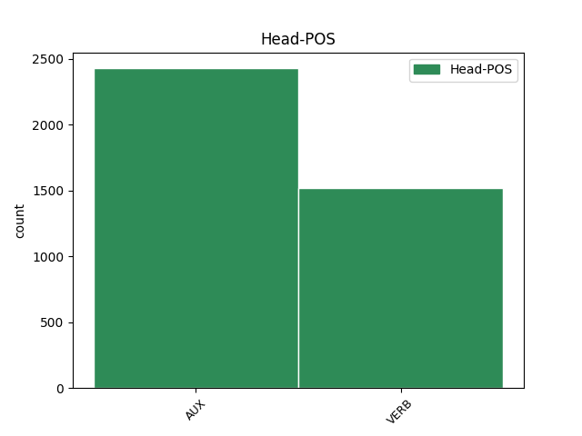
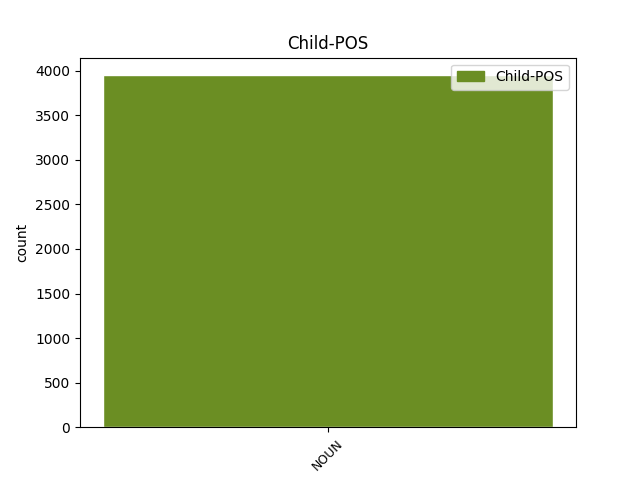

Distribution of features within this leaf



Agreement Rules sorted by frequency.
- When the dependent token is the subject(subj) of the head token, and the dependent token is NOUN.
1 KOČEVJE _ _ _ _ 0 _ _ _
2 Iz _ _ _ _ 0 _ _ _
3 Kočevja _ _ _ _ 0 _ _ _
4 proti _ _ _ _ 0 _ _ _
5 Ljubljani _ _ _ _ 0 _ _ _
6 v _ _ _ _ 0 _ _ _
7 prihodnje _ _ _ _ 0 _ _ _
8 ne _ _ _ _ 0 _ _ _
9 bodo _ _ _ _ 0 _ _ _
10 vozili _ _ _ _ 0 _ _ _
11 zgolj _ _ _ _ 0 _ _ _
12 les _ _ _ _ 0 _ _ _
13 , _ _ _ _ 0 _ _ _
14 neprecenljivo _ _ _ _ 0 _ _ _
15 bogastvo _ _ _ _ 0 _ _ _
16 poraščene _ _ _ _ 0 _ _ _
17 pokrajine _ _ _ _ 0 _ _ _
18 tik _ _ _ _ 0 _ _ _
19 ob _ _ _ _ 0 _ _ _
20 hrvaški _ _ _ _ 0 _ _ _
21 meji _ _ _ _ 0 _ _ _
22 , _ _ _ _ 0 _ _ _
23 gneča gneča NOUN Ncfsn Case=Nom|Gender=Fem|Number=Sing 26 subj _ Dep=26|Rel=Sb
24 na _ _ _ _ 0 _ _ _
25 cesti _ _ _ _ 0 _ _ _
26 bo biti VERB Va-f3s-n Mood=Ind|Number=Sing|Person=3|Polarity=Pos|Tense=Fut|VerbForm=Fin 0 _ _ _
27 tudi _ _ _ _ 0 _ _ _
28 zaradi _ _ _ _ 0 _ _ _
29 povečane _ _ _ _ 0 _ _ _
30 zmogljivosti _ _ _ _ 0 _ _ _
31 pri _ _ _ _ 0 _ _ _
32 proizvodnji _ _ _ _ 0 _ _ _
33 najbolj _ _ _ _ 0 _ _ _
34 znanih _ _ _ _ 0 _ _ _
35 slovenskih _ _ _ _ 0 _ _ _
36 sirov _ _ _ _ 0 _ _ _
37 . _ _ _ _ 0 _ _ _
Disagree Examples:
1 Tako _ _ _ _ 0 _ _ _
2 sta biti AUX Va-r3d-n Mood=Ind|Number=Dual|Person=3|Polarity=Pos|Tense=Pres|VerbForm=Fin 0 _ _ _
3 bili _ _ _ _ 0 _ _ _
4 dirka dirka NOUN Ncfsn Case=Nom|Gender=Fem|Number=Sing 2 subj _ Dep=3|Rel=Sb
5 in _ _ _ _ 0 _ _ _
6 poroka _ _ _ _ 0 _ _ _
7 istega _ _ _ _ 0 _ _ _
8 dne _ _ _ _ 0 _ _ _
9 . _ _ _ _ 0 _ _ _
1 Ljubiteljev ljubitelj NOUN Ncmpg Case=Gen|Gender=Masc|Number=Plur 4 subj _ Dep=4|Rel=Sb
2 konjeniškega _ _ _ _ 0 _ _ _
3 športa _ _ _ _ 0 _ _ _
4 je biti VERB Va-r3s-n Mood=Ind|Number=Sing|Person=3|Polarity=Pos|Tense=Pres|VerbForm=Fin 0 _ _ _
5 namreč _ _ _ _ 0 _ _ _
6 v _ _ _ _ 0 _ _ _
7 Angliji _ _ _ _ 0 _ _ _
8 še _ _ _ _ 0 _ _ _
9 vedno _ _ _ _ 0 _ _ _
10 veliko _ _ _ _ 0 _ _ _
11 in _ _ _ _ 0 _ _ _
12 za _ _ _ _ 0 _ _ _
13 neposredni _ _ _ _ 0 _ _ _
14 prenos _ _ _ _ 0 _ _ _
15 dirke _ _ _ _ 0 _ _ _
16 Grand _ _ _ _ 0 _ _ _
17 National _ _ _ _ 0 _ _ _
18 jih _ _ _ _ 0 _ _ _
19 niso _ _ _ _ 0 _ _ _
20 želeli _ _ _ _ 0 _ _ _
21 prikrajšati _ _ _ _ 0 _ _ _
22 . _ _ _ _ 0 _ _ _
1 Predstavilo _ _ _ _ 0 _ _ _
2 se _ _ _ _ 0 _ _ _
3 bo biti AUX Va-f3s-n Mood=Ind|Number=Sing|Person=3|Polarity=Pos|Tense=Fut|VerbForm=Fin 0 _ _ _
4 sto _ _ _ _ 0 _ _ _
5 razstavljavcev razstavljavec NOUN Ncmpg Case=Gen|Gender=Masc|Number=Plur 3 subj _ Dep=1|Rel=Sb
6 iz _ _ _ _ 0 _ _ _
7 petnajstih _ _ _ _ 0 _ _ _
8 držav _ _ _ _ 0 _ _ _
9 , _ _ _ _ 0 _ _ _
10 ki _ _ _ _ 0 _ _ _
11 bodo _ _ _ _ 0 _ _ _
12 razstavljali _ _ _ _ 0 _ _ _
13 in _ _ _ _ 0 _ _ _
14 prodajali _ _ _ _ 0 _ _ _
15 naravne _ _ _ _ 0 _ _ _
16 in _ _ _ _ 0 _ _ _
17 obdelane _ _ _ _ 0 _ _ _
18 lepote _ _ _ _ 0 _ _ _
19 skritega _ _ _ _ 0 _ _ _
20 podzemlja _ _ _ _ 0 _ _ _
21 . _ _ _ _ 0 _ _ _
1 Tudi _ _ _ _ 0 _ _ _
2 v _ _ _ _ 0 _ _ _
3 Sloveniji _ _ _ _ 0 _ _ _
4 sta biti VERB Va-r3d-n Mood=Ind|Number=Dual|Person=3|Polarity=Pos|Tense=Pres|VerbForm=Fin 0 _ _ _
5 aerobika aerobika NOUN Ncfsn Case=Nom|Gender=Fem|Number=Sing 4 subj _ Dep=4|Rel=Sb
6 in _ _ _ _ 0 _ _ _
7 fitnes _ _ _ _ 0 _ _ _
8 med _ _ _ _ 0 _ _ _
9 najbolj _ _ _ _ 0 _ _ _
10 priljubljenimi _ _ _ _ 0 _ _ _
11 oblikami _ _ _ _ 0 _ _ _
12 rekreacije _ _ _ _ 0 _ _ _
13 , _ _ _ _ 0 _ _ _
14 zato _ _ _ _ 0 _ _ _
15 bi _ _ _ _ 0 _ _ _
16 morali _ _ _ _ 0 _ _ _
17 posvečati _ _ _ _ 0 _ _ _
18 več _ _ _ _ 0 _ _ _
19 pozornosti _ _ _ _ 0 _ _ _
20 tehniki _ _ _ _ 0 _ _ _
21 vadbe _ _ _ _ 0 _ _ _
22 . _ _ _ _ 0 _ _ _
1 A _ _ _ _ 0 _ _ _
2 veste _ _ _ _ 0 _ _ _
3 , _ _ _ _ 0 _ _ _
4 koliko _ _ _ _ 0 _ _ _
5 žensk ženska NOUN Ncfpg Case=Gen|Gender=Fem|Number=Plur 7 subj _ Dep=7|Rel=Sb
6 takole _ _ _ _ 0 _ _ _
7 zapusti zapustiti VERB Vmer3s Aspect=Perf|Mood=Ind|Number=Sing|Person=3|Tense=Pres|VerbForm=Fin 0 _ _ _
8 svoje _ _ _ _ 0 _ _ _
9 partnerje _ _ _ _ 0 _ _ _
10 in _ _ _ _ 0 _ _ _
11 se _ _ _ _ 0 _ _ _
12 potem _ _ _ _ 0 _ _ _
13 vrnejo _ _ _ _ 0 _ _ _
14 … _ _ _ _ 0 _ _ _
15 ? _ _ _ _ 0 _ _ _